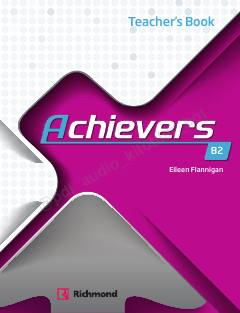

ABAchievers B2 ingliz tili kursi uchun o'qituvchilarning metodik qo'llanmasi.
Ushbu kitob o'smirlar uchun mo'ljallangan Achievers B2 ingliz tili kursining o'qituvchilar uchun mo'ljallangan metodik qo'llanmasidir. Unda dars rejalarini tuzish, o'quvchilarni imtihonlarga tayyorlash va til ko'nikmalarini rivojlantirish bo'yicha batafsil tavsiyalar hamda qo'shimcha materiallar keltirilgan.